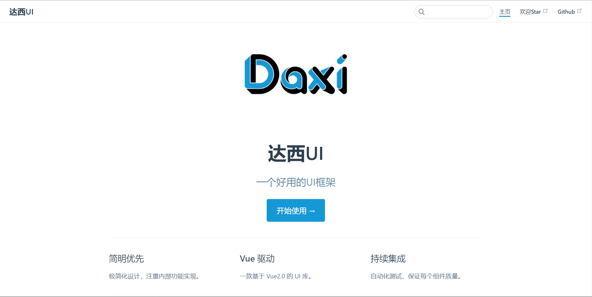
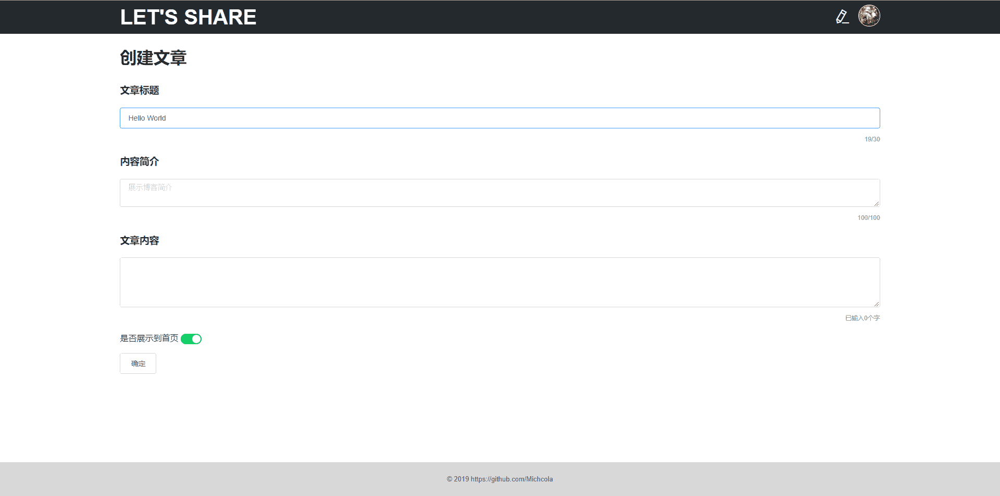
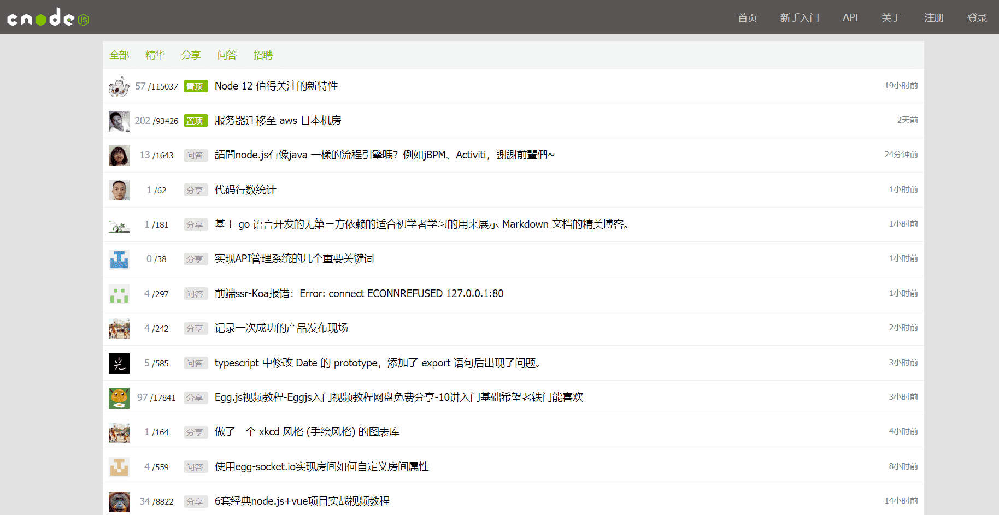
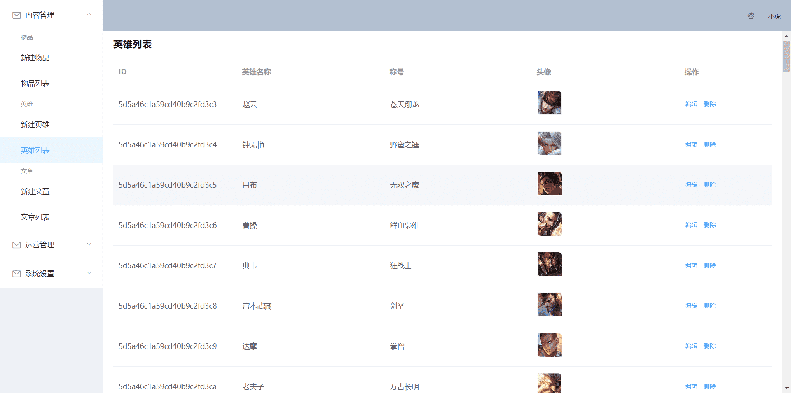

项目经历
Daxi UI 框架
- 项目介绍： 该项目参照Element UI、 Ant Design、Framework7 等 UI 库思路，制作的一个基于Vue 的简易 UI 框架， 目前已支持按钮、输入框、网格、布局、Toast、Tabs、Popover、手风琴等组件。每组组件历经需求分析到Mocha 单元测试， 使用TravisCI 实现持续集成测试。使用Parcel 打包， Yarn 进行包管理 该项目官方文档基于VuePress 制作，且在npmjs.org上发布 完成该项目使我对前端工程化流程有了深刻的理解
- 技术：Vue、VuePress、ES6、Parcel、Yarn、Mocha、TravisCI、SCSS
- 项目源码：点击查看
- 浏览链接：点击查看
基于Vue.js的共享博客
Vue.js搭建仿CNode社区
Moba类游戏后台管理
- 项目介绍： 该项目使用NodeJs +VueJs (Express +ElementUI ) 全栈开发Moba类手机端官网和管理后台, 通过Vue-Cli 搭建前台官网及后台管理，后台采用Element UI 框架 实现通用 CRUD 接口,富文本编辑器等功能， 运用axios 拦截器对请求及响应进行预处理，前台使用样式工具SCSS布局样式定义， 服务端使用框架Express 配合MongoDB 数据库实现数据的 CRUD 基本功能
- 技术栈：Vue-Router、 Vue-Cli、 ES6、 Node.js、 MongoDB、 jwt、 Axios、 SCSS
- 项目源码： 点击查看
小程序：优意翻译
- 项目介绍： 这是一个支持在线翻译的微信小程序，该项目调用百度翻译API接口， 项目主要有翻译首页、语言列表页和翻译历史页，提供多种语言选择，欢迎使用
- 项目源码：点击查看
- 浏览项目：微信搜索小程序—优意翻译
技能详情
熟悉HTML语义化及常用标签，了解Canvas、Audio、Video等功能性标签
熟练使用flex、grid等CSS常用布局，掌握CSS3动画、过渡效果等新增特性，能够使用SCSS常用语法
熟悉原生JavaScript，理解闭包、原型链、异步等基础概念，能够使用ES6+常用语法，能够使用jQuery常用API，了解其封装思想
熟悉Vue框架常用功能，理解如生命周期、组件、虚拟DOM、数据响应式等概念，能够使用Vuex、Vue-router、VuePress、Vue CLI等相关插件开发项目
熟悉微信小程序开发流程，能够使用rem、viewport、媒体查询等移动端适配方案
了解前端工程化，能够使用Webpack、Parcel等打包工具
了解AJAX、JSONP等HTTP相关知识，了解常见的Web性能优化方案
了解Node.js，能够使用Express框架搭建后台服务端，实现登录、注册，后端路由等基础功能
熟练使用VS Code、WebStorm、Git、SVN、Git Bash等常用开发工具
关于我
2019 年 7 月毕业于厦门理工学院，专业为软件工程。
在校期间成绩优异，空闲时间去公司做实习前端，热爱技术。
工作中负责公司网站PC/Mobile端页面的维护与开发，利用业余时间通过书籍和在线视频自学前端相关知识。
学习过程中能够通过阅读中英文文档和Google查询报错信息来解决遇到的问题。
平时通过开发各种轻项目来加深相关知识的理解，迄今为止利用所有业余时间自学前端近一年，希望未来能够从事前端开发的工作。